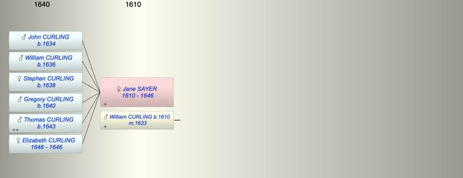

| [Index] |
| Jane SAYER (1610 - 1646) |
|  |
| b. abt 1610 |
| m. 24 Oct 1633 William CURLING (1610 - ) at Tilmanstone |
| d. 1646 at St Laurence aged 36 |
| Children (6): |
| John CURLING (1634 - ) |
| William CURLING (1636 - ) |
| Stephen CURLING (1638 - ) |
| Gregory CURLING (1640 - ) |
| Thomas CURLING (1643 - ) |
| Elizabeth CURLING (1646 - 1646) |
| Events in Jane SAYER (1610 - 1646)'s life | |||||
| Date | Age | Event | Place | Notes | Src |
| abt 1610 | Jane SAYER was born | ||||
| 24 Oct 1633 | 23 | Married William CURLING (aged 23) | Tilmanstone | ex FMP PR | |
| 1634 | 24 | Birth of son John CURLING | Tilmanstone | Note 1 | |
| 1636 | 26 | Birth of son William CURLING | Tilmanstone | Note 2 | |
| 1638 | 28 | Birth of daughter Stephen CURLING | St Peter, Thanet | Note 3 | |
| 1640 | 30 | Birth of son Gregory CURLING | St Peter, Thanet | Note 4 | |
| 1643 | 33 | Birth of son Thomas CURLING | St Laurence | Note 5 | |
| 1646 | 36 | Birth of daughter Elizabeth CURLING | Note 6 | ||
| 1646 | 36 | Jane SAYER died | St Laurence | Note 7 | |
| 1646 | 36 | Death of daughter Elizabeth CURLING | St Laurence | buried 25 May 1646 | |
| Personal Notes: |
|
MW wrote:
I found that William Curling mar. Jane Sayer, widow, 24 Oct 1633 at Tilmanstone, the register giving only names, not the parishes of the parties. On 16 Jan 1628/9 Stephen Sayer aged 30 mar. Jane Terry, widow at Minster in Thanet; and, citing a published marriage licence, Adam Terry aged 31 on 18 Dec 1623 at Minster in Thanet mar. Jane Bing, 34, widow. However, a woman born in 1589 could not have been mother of the Curling children bapt in the 1640s, so perhaps her actual age in 1623 was 24. |
| Created on a Mac™ using iFamily for Mac™ on 8 Oct 2023 |